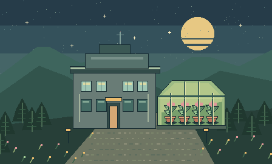

AVENTURA DE BIOTECNOLOGIA
Caderno
de Clones
Uma estufa, um laboratório e dois experimentos esperando por você.

● BASE IPÊ / SETOR 07 VISTA EXTERNA 0101Estufa experimentalPropagação vegetativa
02Laboratório de embriologiaTransferência nuclear
WASD caminharE interagir
WASD ou ↑↓←→ moverE interagirESPAÇO esquivar